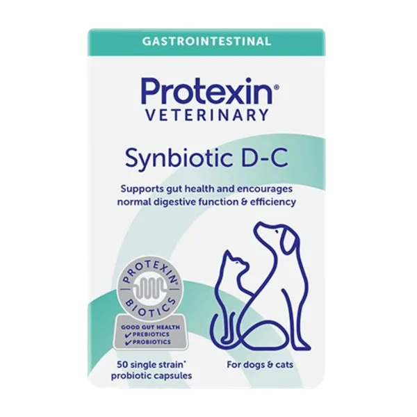

Protexin
Protexin Synbiotic D-C 益生菌
貓狗用益生菌＋益生元膠囊，幫助腸胃・50 顆膠囊
比歷史低價高 31%比 30 天前便宜 26.2%
90 天價格水準：一般（最低 €0.43/顆 ～ 最高 €0.76/顆，依過去 16 天每日最低價）
商店報價（依每單位價排序）
| 店家 | 規格 | 總價 | 每單位價 | 條件 | 購買 |
|---|---|---|---|---|---|
| Tradeinn/Bricoinn | 50 Cap | €27.99 | €0.56/顆 | 運費未核實 站內黑五橫幅 BLACK FRIDAY -15% CODE: BF15（適用性未驗證）；2026-11-28 live browser：50 粒 €27.99，價格不變，有貨（Beschikbaar，預計 12 月 3–8 日送達），仍為最佳價。運費未核實；頁面黑五碼 BF15 最高 -15% 未測試，不計入。 | 前往 → |
| Milo | 50 capsules（頁面標題寫 50 tab） | €37.95 | €0.76/顆 | 滿 €49 免運・運費 €3.95 需訂閱定期配送 2026-11-28 店內目錄核實：50 粒 €39.95 一次價不變，有貨；定期配送 -5% €37.95 沿用 2026-11-24 商品頁核實折扣率推算，今日店內目錄未顯示訂閱價，未重核。運費 €3.95 未滿 €49，免運門檻 €49。 | 前往 → |
| Medpets | 50 capsules | €41.80 | €0.84/顆 | 滿 €69 免運・運費 €4.95・最低訂單 €14.95 需訂閱定期配送 缺貨 2026-11-28 live browser：50 粒 €44.45 一次價／Herhaal €41.80，價格不變，仍缺貨「Onbekende levertijd」；免運 €69。 | 前往 → |
| Soin et Nature | Dômes TVM France50 GTIN5027314504098 | €58.99 | €1.18/顆 | NL重量/服務費見同店官方政策，未測結帳 缺貨 2026-11-28 live browser：50 粒 €58.99（含稅），價格不變，缺貨，顯示「Aanvulling bezig」；滿 €129 免運。 | 前往 → |
| Tiershop.de | Dechra German legacy photo 50x180mg, net9g; current supplied pack unverified | €27.75 | €0.56/顆 | Ausland≤31.5kg€14.95，但國家清單僅列Deutschland；NL未確認 沿用 2026-11-11 報價 2026-11-11 重新抓取（結構化資料）；較上次 11-09：同；運費／促銷欄沿用上次未重核 | 前往 → |
| Dierspullen.nl | 50 stuks（5x10 caps 200mg） | €46.49 | €0.93/顆 | 運費 €0.00 沿用 2026-11-11 報價 2026-11-11 重新抓取（結構化資料）；較上次 11-09：同；運費／促銷欄沿用上次未重核 | 前往 → |
| Agroart.hr | single10caps blister NOT50box | €5.00 | €0.50/顆 | 運費未知 沿用 2026-11-07 報價 缺貨 現頁明說5EUR是10粒一泡殼非50；摘要/slug50過時。每粒.50，5泡殼才50粒25EUR，仍須庫存/NL配送；不能宣稱5EUR/50粒新低 | 前往 → |
| Amazon.de | Dechra Synbiotic D-C 50caps | €30.46 | €0.61/顆 | 目的地NL未選；顯示免運不能當NL免運 沿用 2026-11-07 報價 未核實 Amazon履約；訂閱顯示28.94另列，不疊返現；NL地址VAT可能變動；地區標籤官方映射待補 | 前往 → |
| RaoFarmaceutici.it | Ecuphar50caps | €30.78 | €0.62/顆 | 運費未知 沿用 2026-11-07 報價 未核實 舊38.00特價30.78，NL運費/含稅待核，不較Tradeinn商品價低 | 前往 → |
| Xfarma.it | BioforlifeTherapet/Synbiopet title conflict; body50blister | €31.71 | €0.63/顆 | 運費未知 沿用 2026-11-07 報價 未核實 URL500g不對，實頁內文Formato50capsinblister；標題Synbiopet、H1SynbioticDC，需承接證據。NL未讀countryzone不能套ZONE1 9.90。低近期30.23不是當前31.71 | 前往 → |
| Pharmacy4pets | 50 capsules | €37.27 | €0.75/顆 | 滿 €69.95 免運 沿用 2026-11-07 報價 缺貨 schema OutOfStock | 前往 → |
| Pharmapets | 50 caps（Dômes Pharma 標籤） | €59.59 | €1.19/顆 | 滿 €39 免運 沿用 2026-11-07 報價 缺貨 頁面「Momenteel niet leverbaar」；標籤 Dômes Pharma | 前往 → |
| Pharmapets.be | Dômes/TVM50 regional label | €62.52 | €1.25/顆 | 運費未知 沿用 2026-11-07 報價 未核實 非18.79！另顯56.27疑首訂折扣未混為一次價。含稅62.52超39免政策，非最便宜 | 前往 → |
| Amazon.nl | Synbiotic DC（VE-030） | €67.37 | €1.35/顆 | 依賣家/Amazon 經 CashbackXL/ShopBuddies 返現 €4.45 沿用 2026-11-07 報價 未核實 賣家未解析 | 前往 → |
| VetPetSolutions.it | titleJar50; description10or50blister; sizefield60 conflict | €29.90 | €29.90/盒 | 運費未知 沿用 2026-11-07 報價 缺貨 商品標題瓶裝50但內文Scatolada10o50inblister、Size60，不取60粒也不把barattolo當官方確證。庫存/含稅/NL配送未知；非比Tradeinn低 | 前往 → |